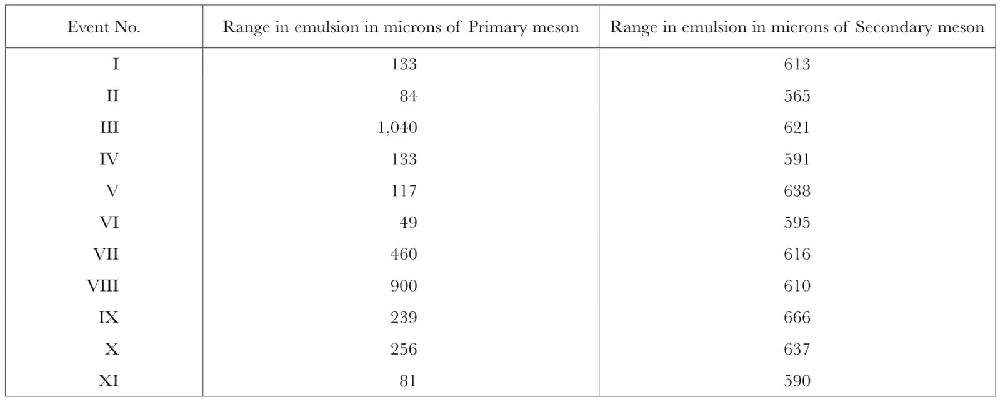
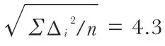
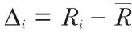
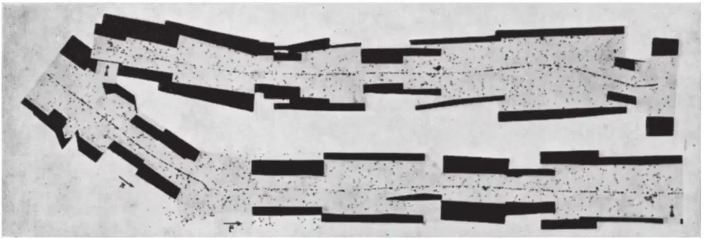
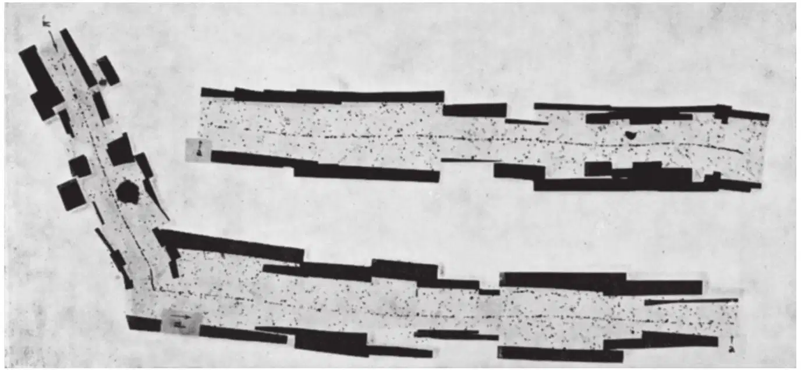
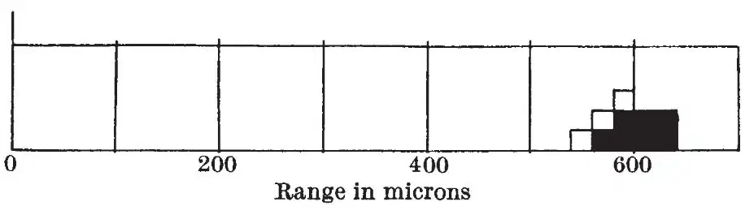
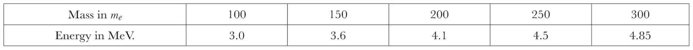
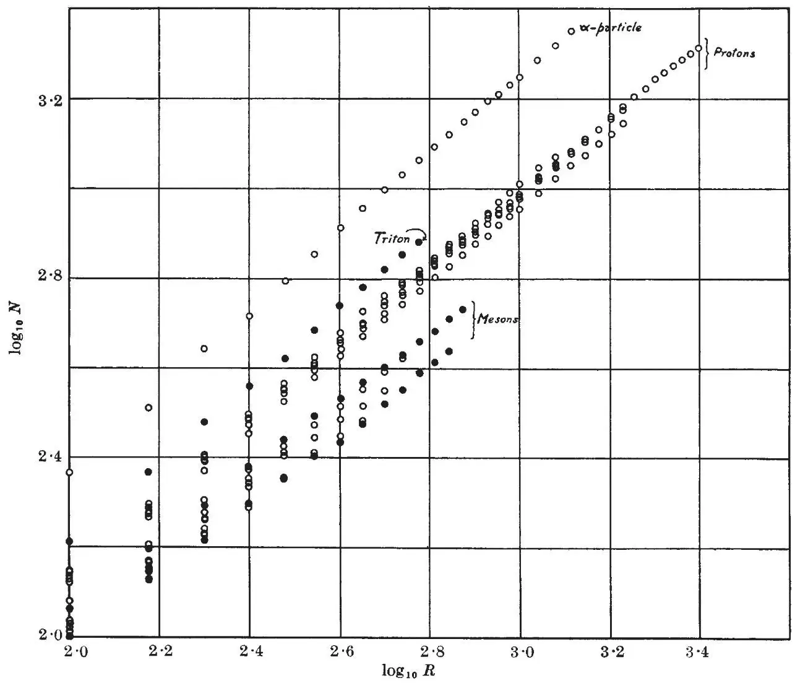
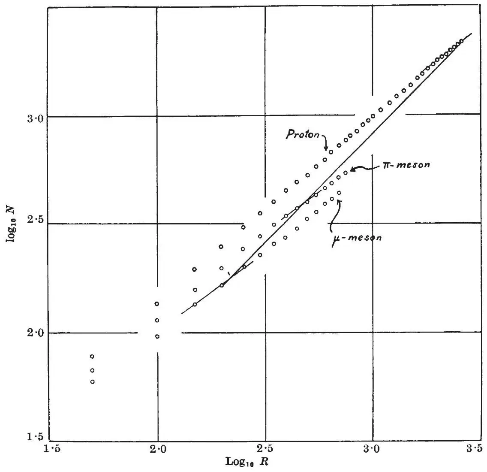
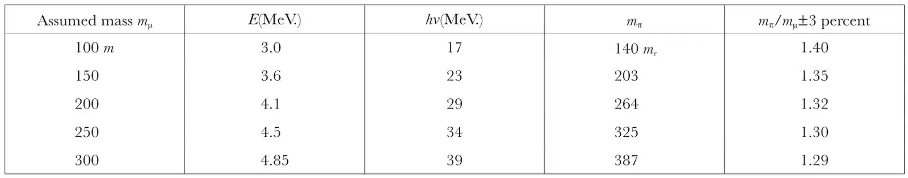

中文
中文C. M. G. Lattes et al.
Editor’s Note
Physicists in the late 1940s had adopted the term “meson” to refer to any particle having mass between that of an electron and a proton. Here the Brazilian physicist Cesar Lattes and colleagues reported on their observations of several hundred meson-like particles detected in photographic plates exposed at high altitudes, and presumably having origins as cosmic rays. Their observations led them to suggest that some of the initial mesons, when striking the photographic emulsions, created secondary mesons of a new kind. It soon became clear that this new particle—the pion—takes part in nuclear interactions. It was initially predicted to mediate such interactions by Hideki Yukawa in 1935, a prediction for which he won the Nobel Prize in 1949. 中文
INTRODUCTION. In recent experiments, it has been shown that charged mesons, brought to rest in photographic emulsions, sometimes lead to the production of secondary mesons. We have now extended these observations by examining plates exposed in the Bolivian Andes at a height of 5,500 m., and have found, in all, forty examples of the process leading to the production of secondary mesons. In eleven of these, the secondary particle is brought to rest in the emulsion so that its range can be determined. In Part 1 of this article, the measurements made on these tracks are described, and it is shown that they provide evidence for the existence of mesons of different mass; In Part 2, we present further evidence on the production of mesons, which allows us to show that many of the observed mesons are locally generated in the “explosive” disintegration of nuclei, and to discuss the relationship of the different types of mesons observed in photographic plates to the penetrating component of the cosmic radiation investigated in experiments with Wilson chambers and counters. 中文
Part 1. Existence of Mesons of Different Mass
As in the previous communications1, we refer to any particle with a mass intermediate between that of a proton and an electron as a meson. It may be emphasized that, in using this term, we do not imply that the corresponding particle necessarily has a strong interaction with nucleons, or that it is closely associated with the forces responsible for the cohesion of nuclei. 中文
We have now observed a total of 644 meson tracks which end in the emulsion of our plates. 451 of these were found, in plates of various types, exposed at an altitude of 2,800 m. at the Observatory of the Pic du Midi, in the Pyrenees; and 193 in similar plates exposed at 5,500 m. at Chacaltaya in the Bolivian Andes. The 451 tracks in the plates exposed at an altitude of 2,800 m. were observed in the examination of 5 c.c. emulsion. This corresponds to the arrival of about 1.5 mesons per c.c. per day, a figure which represents a lower limit, for the tracks of some mesons may be lost through fading, and through failure to observe tracks of very short range. The true number will thus be somewhat higher. In any event, the value is of the same order of magnitude as that we should expect to observe in delayed coincidence experiments at a height of 2,800 m., basing our estimates on the observations obtained in similar experiments at sea-level, and making reasonable assumptions about the increase in the number of slow mesons with altitude. It is therefore certain that the mesons we observe are a common constituent of the cosmic radiation. 中文
Photomicrographs of two of the new examples of secondary mesons, Nos. III and IV, are shown in Figs. 1 and 2. Table 1 gives details of the characteristics of all events of this type observed up to the time of writing, in which the secondary particle comes to the end of its range in the emulsion. 中文
Table 1

Mean range 614±8 μ. Straggling coefficient

percent, where
, Ri being the range of a secondary meson, and the mean value for n particles of this type. 中文
the mean value for n particles of this type. 中文

Fig. 1. Observation by Mrs. I. Powell. Cooke × 95 achromatic objective; C2 Ilford Nuclear Research emulsion loaded with boron. The track of the μ-meson is given in two parts, the point of junction being indicated by a and an arrow 中文

Fig. 2. Cooke × 95 achromatic objective. C2 Ilford Nuclear Research emulsion loaded with boron 中文
The distribution in range of the secondary particles is shown in Fig. 3. The values refer to the lengths of the projections of the actual trajectories of the particles on a plane parallel to the surface of the emulsion. The true ranges cannot, however, be very different from the values given, for each track is inclined at only a small angle to the plane of the emulsion over the greater part of its length. In addition to the results for the secondary mesons which stop in the emulsion, and which are represented in Fig. 3 by black squares, the length of a number of tracks from the same process, which pass out of the emulsion when near the end of their range, are represented by open squares. 中文

Fig. 3. Distribution in range of ten secondary mesons. Those marked ■ stop in the emulsion; the three marked □ leave the emulsion when near the end of their range. Mean range of secondary mesons, 606 microns. The results for events Nos.VIII to XI are not included in the figure 中文
The μ-Decay of Mesons
Two important conclusions follow from these measurements. Our observations show that the directions of ejection of the secondary mesons are orientated at random. We can therefore calculate the probability that the trajectory of a secondary meson, produced in a process of the type which we observe, will remain within the emulsion, of thickness 50 μ, for a distance greater than 500 μ. If we assume, as a first approximation, that the trajectories are rectilinear, we obtain a value for the probability of 1 in 20. The marked Coulomb scattering of mesons in the Nuclear Research emulsions will, in fact, increase the probability of “escape”. The six events which we observe in plates exposed at 2,800 m., in which the secondary particle remains in the emulsion for a distance greater than 500 μ, therefore correspond to the occurrence in the emulsion of 120±50 events of this particular type. Our observations, therefore, prove that the production of a secondary meson is a common mode of decay of a considerable fraction of those mesons which come to the end of their range in the emulsion. 中文
Second, there is remarkable consistency between the values of the range of the secondary mesons, the variation among the individual values being similar to that to be expected from “straggling”, if the particles are always ejected with the same velocity. We can therefore conclude that the secondary mesons are all of the same mass and that they are emitted with constant kinetic energy. 中文
If mesons of lower range are sometimes emitted in an alternative type of process, they must occur much less frequently than those which we have observed; for the geometrical conditions, and the greater average grain-density in the tracks, would provide much more favourable conditions for their detection. In fact, we have found no such mesons of shorter range. We cannot, however, be certain that mesons of greater range are not sometimes produced. Both the lower ionization in the beginning of the trajectory, and the even more unfavourable conditions of detection associated with the greater lengths of the tracks, would make such a group, or groups, difficult to observe. Because of the large fraction of the mesons which, as we have seen, can be attributed to the observed process, it is reasonable to assume that alternative modes of decay, if they exist, are much less frequent than that which we have observed. There is, therefore, good evidence for the production of a single homogeneous group of secondary mesons, constant in mass and kinetic energy. This strongly suggests a fundamental process, and not one involving an interaction of a primary meson with a particular type of nucleus in the emulsion. It is convenient to refer to this process in what follows as the μ-decay. We represent the primary mesons by the symbol π, and the secondary by μ. Up to the present, we have no evidence from which to deduce the sign of the electric charge of these particles. In every case in which they have been observed to come to the end of their range in the emulsion, the particles appear to stop without entering nuclei to produce disintegrations with the emission of heavy particles. 中文
Knowing the range-energy relation for protons in the emulsion, the energy of ejection of the secondary mesons can be deduced from their observed range, if a value of the mass of the particles is assumed. The values thus calculated for various masses are shown in Table 2. 中文
Table 2

No established range-energy relation is available for protons of energies above 13 MeV., and it has therefore been necessary to rely on an extrapolation of the relation established for low energies. We estimate that the energies given in Table 2 are correct to within 10 percent. 中文
Evidence of a Difference in Mass of π- and μ-Mesons
It has been pointed out1 that it is difficult to account for the μ-decay in terms of an interaction of the primary meson with the nucleus of an atom in the emulsion leading to the production of an energetic meson of the same mass as the first. It was therefore suggested that the observations indicate the existence of mesons of different mass. Since the argument in support of this view relied entirely on the principle of the conservation of energy, a search was made for processes which were capable of yielding the necessary release of energy, irrespective of their plausibility on other grounds. Dr. F. C. Frank has re-examined such possibilities in much more detail, and his conclusions are given in an article to follow. His analysis shows that it is very difficult to account for our observations, either in terms of a nuclear disintegration, or of a “building-up” process in which, through an assumed combination of a negative meson with a hydrogen nucleus, protons are enabled to enter stable nuclei of the light elements with the release of binding energy. We have now found it possible to reinforce this general argument for the existence of mesons of different mass with evidence based on grain-counts. 中文
We have emphasized repeatedly1 that it is necessary to observe great caution in drawing conclusions about the mass of particles from grain-counts. The main source of error in such determinations arises from the fugitive nature of the latent image produced in the silver halide granules by the passage of fast particles. In the case of the μ-decay process, however, an important simplification occurs. It is reasonable to assume that the two meson tracks are formed in quick succession, and are subject to the same degree of fading. Secondly, the complete double track in such an event is contained in a very small volume of the emulsion, and the processing conditions are therefore identical for both tracks, apart from the variation of the degree of development with depth. These features ensure that we are provided with very favourable conditions in which to determine the ratio of the masses of the π- and μ-mesons, in some of these events. 中文
In determining the grain density in a track, we count the number of individual grains in successive intervals of length 50 μ along the trajectory, the observation being made with optical equipment giving large magnification (×2,000), and the highest available resolving power. Typical results for protons and mesons are shown in Fig. 4. These results were obtained from observations on the tracks in a single plate, and it will be seen that there is satisfactory resolution between the curves for particles of different types. The “spread” in the results for different particles of the same type can be attributed to the different degrees of fading associated with the different times of passage of the particles through the emulsion during an exposure of six weeks. 中文

Fig. 4. N is total number of grains in track of residual range R (scale-divisions). 1 scale-division=0.85 microns 中文
Applying these methods to the examples of the μ-decay process, in which the secondary mesons come to the end of their range in the emulsion, it is found that in every case the line representing the observations on the primary meson lies above that for the secondary particle. We can therefore conclude that there is a significant difference in the grain-density in the tracks of the primary and secondary mesons, and therefore a difference in the mass of the particles. This conclusion depends, of course, on the assumption that the π- and μ-particles carry equal charges. The grain-density at the ends of the tracks, of particles of both types, are consistent with the view that the charges are of magnitude |e|. 中文
A more precise comparison of the masses of the π- and μ-mesons can only be made in those cases in which the length of the track of the primary meson in the emulsion is of the order of 600 μ. The probability of such a favourable event is rather small, and the only examples we have hitherto observed are those listed as Nos. III and VIII in Table 1. A mosaic of micrographs of a part only of the first of these events is reproduced in Fig. 1, for the length of the track of the μ-meson in the emulsion exceeds 1,000 μ. The logarithms of the numbers of grains in the tracks of the primary and secondary mesons in this event are plotted against the logarithm of the residual range in Fig. 5. By comparing the residual ranges at which the grain-densities in the two tracks have the same value, we can deduce the ratio of the masses. We thus obtain the result mπ/mμ=2.0. Similar measurements on event No. VIII give the value 1.8. In considering the significance which can be attached to this result, it must be noticed that in addition to the standard deviations in the number of grains counted, there are other possible sources of error. Difficulties arise, for example, from the fact that the emulsions do not consist of a completely uniform distribution of silver halide grains. “Islands” exist, in which the concentration of grains is significantly higher, or significantly lower, than the average values, the variations being much greater than those associated with random fluctuations. The measurements on the other examples of μ-decay are much less reliable on account of the restricted range of the π-mesons in the emulsion; but they give results lower than the above values. We think it unlikely, however, that the true ratio is as low as 1.5. 中文

Fig. 5. N is total number of grains in track of residual range R (scale-divisions). 1 scale-division=0.85 microns The 45°-line cuts the curves of the mesons and proton in the region of the same grain density 中文
The above result has an important bearing on the interpretation of the μ-decay process. Let us assume that it corresponds to the spontaneous decay of the heavier π-meson, in which the momentum of the μ-meson is equal and opposite to that of an emitted photon. For any assumed value of the mass of the μ-meson, we can calculate the energy of ejection of the particle from its observed range, and thus determine its momentum. The momentum, and hence the energy of the emitted photon, is thus defined; the mass of the π-meson follows from the relation
c2mπ= c2mµ+ Eµ+ hv.
It can thus be shown that the ratio mπ/mμ is less than 1.45 for any assumed value of mμ in the range from 100 to 300 me, me being the mass of the electron (see Table 3). A similar result is obtained if it is assumed that a particle of low mass, such as an electron or a neutrino, is ejected in the opposite direction to the μ-meson. 中文
Table 3

On the other hand, if it is assumed that the momentum balance in the μ-decay is obtained by the emission of a neutral particle of mass equal to the μ-meson mass, the calculated ratio is about 2.1∶1. 中文
Our preliminary measurements appear to indicate, therefore, that the emission of the secondary meson cannot be regarded as due to a spontaneous decay of the primary particle, in which the momentum balance is provided by a photon, or by a particle of small rest-mass. On the other hand, the results are consistent with the view that a neutral particle of approximately the same rest-mass as the μ-meson is emitted. A final conclusion may become possible when further examples of the μ-decay, giving favourable conditions for grain-counts, have been discovered. 中文
(160, 453-456; 1947)
C. M. G. Lattes, G. P. S. Occhialini and C. F. Powell: H. H. Wills Physical Laboratory, University of Bristol.
Reference:
1. Nature, 159, 93, 186, 694 (1947).
* This article contains a summary of the main features of a number of lectures given, one at Manchester on June 18 and four at the Conference on Cosmic Rays and Nuclear Physics, organised by Prof. W. Heitler, at the Dublin Institute of Advanced Studies, July 5-12. A complete account of the observations, and of the conclusions which follow from them, will be published elsewhere.